Way back in 2014, I ordered the parts and started to build a photometer according to the plans laid out by McClain (2014). I didn’t get very far, it was a busy time. Well, I have finally completed the project!
A number of simple designs for photometers and spectrometers have been published. What drew me to McClain’s approach is that his goal is to teach some basic electronics relevant to instrument design, which is something I have wanted to learn for sometime (apparently since 2014, though actually I think this goes back to watching my father build a Heath Kit stereo receiver which used tubes). Further, McClain starts with a very simple design, and then adds circuit modules to improve the design. Everything is laid out logically and is easy to follow. At each step there is an opportunity to go further to understand how the circuit actually works in detail.
In this post I’ll describe the project at various stages. All the electronics are McClain’s design, but instead of McClain’s cuvette holder I used the design of Kvittingen (Kvittingen et al. (2017)) which uses LEGO bricks as a sample holder and can accommodate an additional detector for fluorescence measurements.
This design is a photometer, and not a spectrophotometer, because only one wavelength at a time can be measured. The source LED must have an emission spectrum overlapping with the \(\lambda_{max}\) of the compound to be measured; LEDs are available which cover pieces of the whole visible spectrum so it’s pretty easy to swap for a different wavelength range. The detector photodiode (a type of LED, working in reverse) responds over a broad wavelength range, though with greatly varying efficiency. If one wants to measure fluorescence, the photodiode is moved to the 90\(^{\circ}\) position.1
A couple of important notes:
The supplementary material to McClain’s article is where everything is covered in detail.
A membership to CircuitLab was really helpful as it allowed me to simulate circuits and change values of components to get a better sense of how things work in detail (as you will see).
I was hoping to get by without an oscilloscope, but ultimately I needed one for troubleshooting. It turned out to really advance my understanding of the circuits. I purchased a PicoScope 2204A which along with the software turns your computer into a basic oscilloscope. Strongly recommended, it’s a very nice product!
Version 1: DC Power Supply for the LED
In this version a standard “green” LED (maximum emission at 523 nm) is used as the light source and has the simplest possible power supply. As built, the system provides a current of about 26 mA to the LED. The data sheet recommends 30 mA max.
The detector in this version is a photodiode linked to a TIA, a transimpedance amplifier. This is an current to voltage (I to V) converter, and something similar can be used in any instrument where a detector generates a current. Figure 1 shows the circuit.
The main deviation from McClain’s design is that R2 needed to be set to 3M \(\ohm\) in order to reach about 1V on the output. McClain gives a range of 100K to 1M. As the value of this resistor goes up, the output voltage goes up due to increasing amplification. This change is likely necessary as the photodiode in use here is a bit different than McClain specified. After some experimentation, the current on I1 (which replicates the current produced by the photodiode in the simulation) was set to 1/10,000 of the value of the current of D1, based upon currents observed when isolating D2 from the rest of the circuit.
Monitoring the current and voltage across D2 as built and warmed up, the values were about 0.3 \(\mu\)A and 0.23 V; if the LEGO holding D1 was moved immediately adjacent to that holding D2 these numbers were 0.7 \(\mu\)A and 0.26 V. These readings support the discussion above that the photodiode was generating a relatively small response.
Figure 1: Version 1 with simple LED power supply and a transimpedance amplifier as the detector.
Figure 2: View of project. The simplicity of the supply to the LED is apparent. The top rail is the negative supply, the lower rail is the positive supply, and the 2nd-from-bottom rail is the ground.
Figure 3: View of project. The op amp for the detector is in the foreground.
Version 2: Relaxation Oscillator as the LED Power Supply
The next step in McClain’s scheme is to change the basic power supply to a more sophisticated “relaxation oscillator” which produces a square wave output with a certain frequency. The idea here is to eliminate stray room light from affecting the output by using a specific AC-like frequency as the source and then modify the detector to only see this frequency. Stray room light may consist of random light causing DC offsets in the circuit, or something more determinant like 60 Hz flicker from light fixtures.
Simulation
The relaxation oscillator circuit was modeled in CircuitLab before building the circuit. The circuit is in Figure 4 and the simulation results are shown in Figure 5.
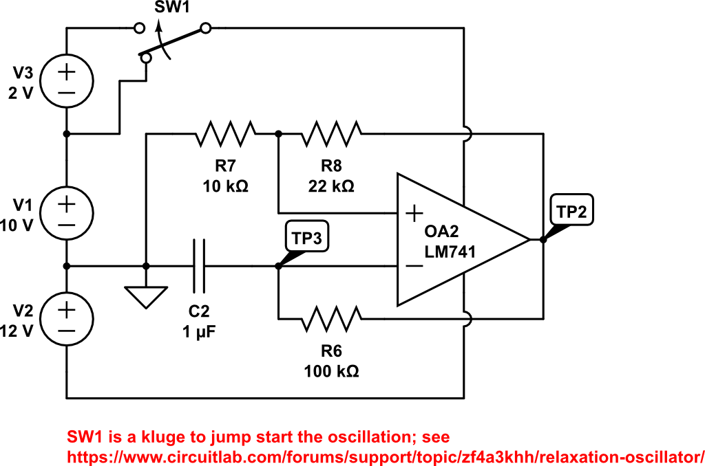
Figure 4: The relaxation oscillator circuit.
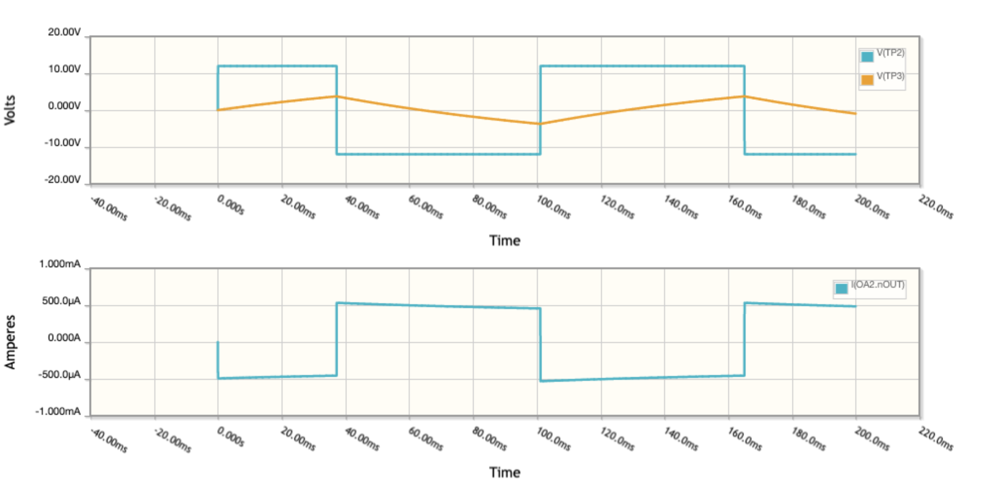
Figure 5: The relaxation oscillator simulation output. The gold/orange line indicates the charge on C2 building and decaying. When it reaches an extreme positive or negative value, the phase of the output square wave changes. The lower plot is the very small current produced at the output of the op amp.
As Built
Capacitor C2 controls the frequency of the square wave produced by the relaxation oscillator. Figure 6 shows the oscilloscope traces with C2 set to 1\(\mu\)F which gives a frequency of about 8 Hz, as seen in the video below. This serves as visual “proof of concept”. Figure 7 shows the oscilloscope traces for a value of 4700 pF for C2 which generates a square wave with frequency 1,500 Hz. This is higher than the frequency of any room light flickering and thus will serve as a “carrier” of the absorbance value unaltered by any stray room light, once we add the other modules to the detection side.
Note that all oscilloscope traces have two vertical scales, one on the left and one on the right, color coordinated with the trace.
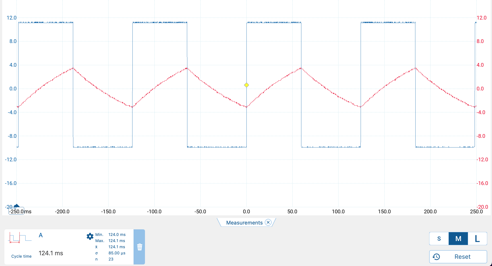
Figure 6: Relaxation oscillator with a 1\(\mu\)F capcitor for C2. The blue curve is the output of the op amp, the red line is the charging and discharging of C2. Note the box at the bottom which reports the period of the square wave, which corresponds to a frequency of about 8 Hz.
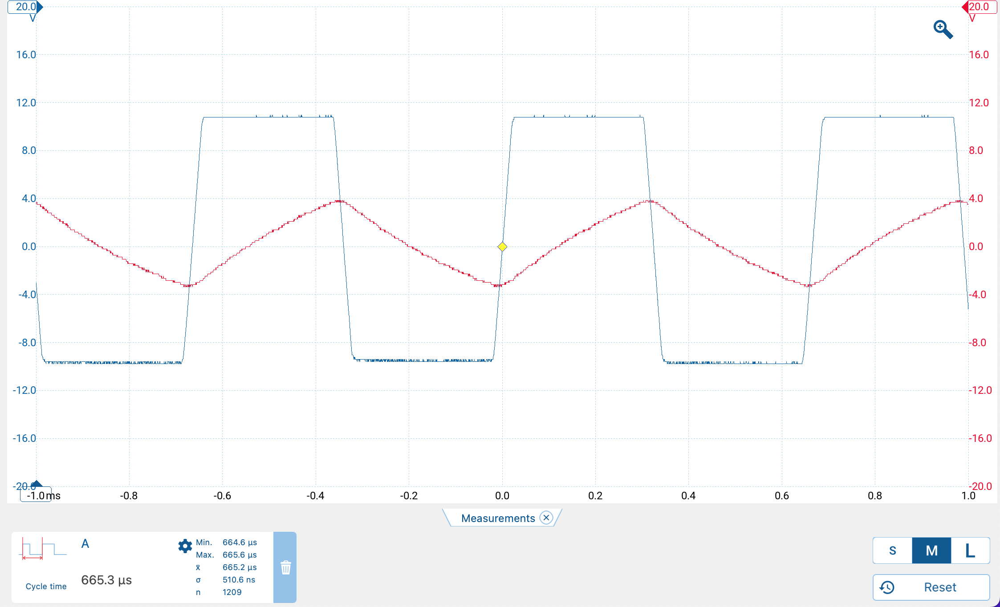
Figure 7: Relaxation oscillator with C2 at 4700 pF. Note the horizontal scale range is much smaller than in the previous figure, as the frequency is much higher.
The built version of the relaxation oscillator corresponds well with the simulation.
Version 3: Almost All the Bells and Whistles
This final version contains all the circuits as described by McClain. I decided to measure voltages directly at the output rather than use an Arduino and display to provide an absorbance value.
Figure 8 shows the final circuit. Note that several test points are labeled and referred to in the discussion below.
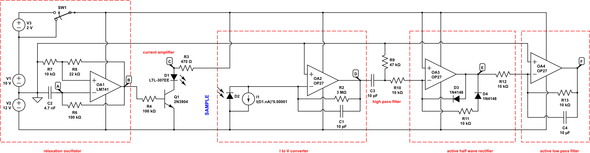
Figure 8: Completed project with key modules labeled. Click for full size.
Relaxation Oscillator
The details of the relaxation oscillator are exactly as described above.
Current Amplifier
As the simulation of the relaxation oscillator shows, the current output of the op amp is very small. Consequently a simple transistor is used to bump up the current driving the LED source to an appropriate value.
I to V Converter
The I to V converter circuit is the same as described earlier.
High Pass Filter
A high pass filter takes a signal that is time-varying, in our case a square wave, and filters it so that only high frequency components are kept. This is a key part of the detector design, since we create an approximately 1,500 Hz square wave and any other component, like 60 Hz flicker from room lights, should be eliminated. Figure 9 shows an isolated version of our high pass filter, and Figure 10 shows the frequency dependency filtering.
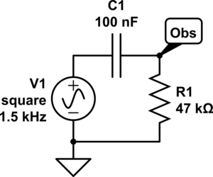
Figure 9: Isolated high pass filter circuit.
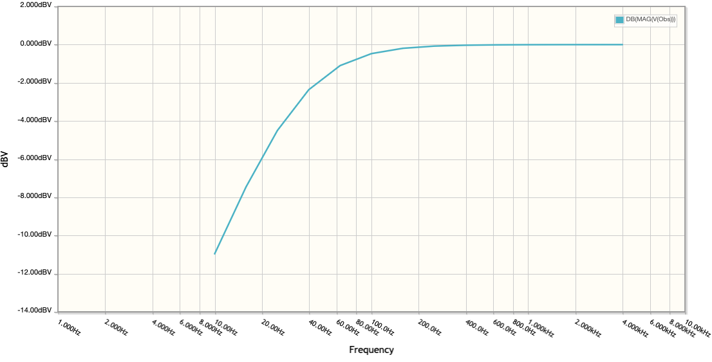
Figure 10: Frequency dependence of the high pass filter. Lower values on the vertical axis means greater attenuation.
Half Wave Rectifier
A half wave rectifier converts an alternating current, alternating between positive and negative values, into a positive only form. Essentially, the negative portion of the signal is converted to positive values, and the positive portion is set to zero. Figure 11 shows the action of the rectifier.
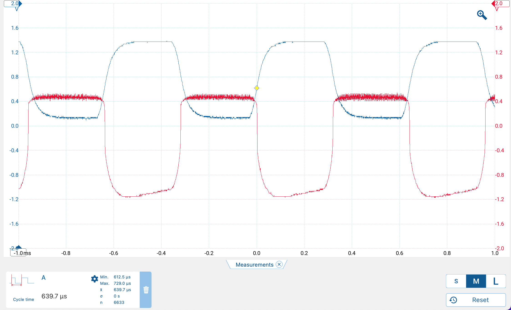
Figure 11: Action of the half wave rectifier. The red trace is observed at test point D, and fluctuates positive and negative. The blue trace is the rectified wave observed at test point E. Notice that its voltage is always positive.
Active Low Pass Filter
The final step is an active low pass filter which only passes signals below a certain frequency and amplifies them (that’s the active part). Importantly, in addition to amplifying the signal, the op amp emits a steady DC voltage which is ultimately proportional to the current hitting the photodiode. This is the value we are after when making absorbance measurements. Figure 12 shows the actual output.
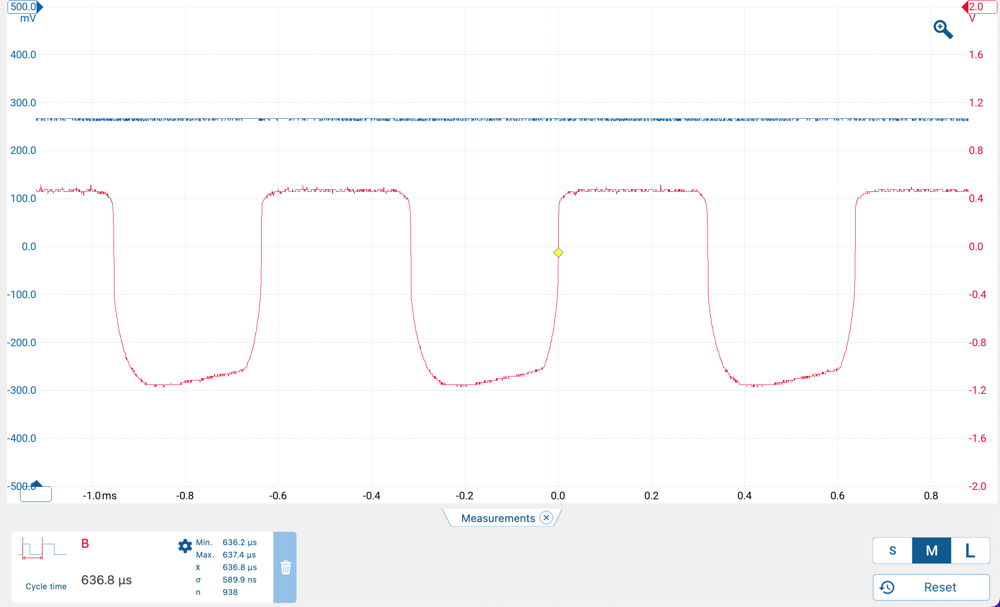
Figure 12: Effect of the low pass filter. The red curve is the same as in the previous figure, namely test poiont D. The blue line is the final DC output at test point F. This is where the final voltages are measured.
If we isolate the low pass filter circuit we can try to understand its operation in greater detail. Figure 13 shows the isolated circuit with simulation inputs configured to match the measured inputs.
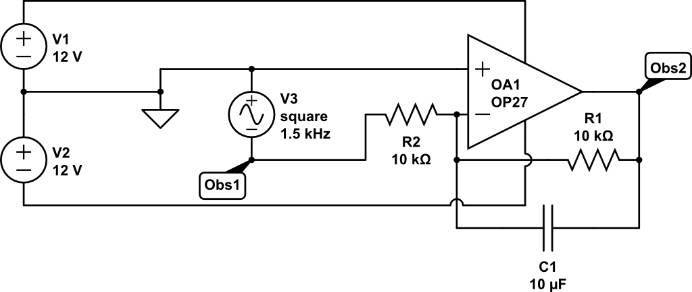
Figure 13: Isolated active low pass filter circuit.
If we look at the frequency dependence of this circuit, we see that low frequencies are passed relatively unattenuated (Figure 14), as expected. The combination of the earlier high pass filter and this low pass filter amounts to a band pass filter. This suggests a potential follow up design which uses a band pass filter followed by rectification and conversion to DC by some combination of op amps.
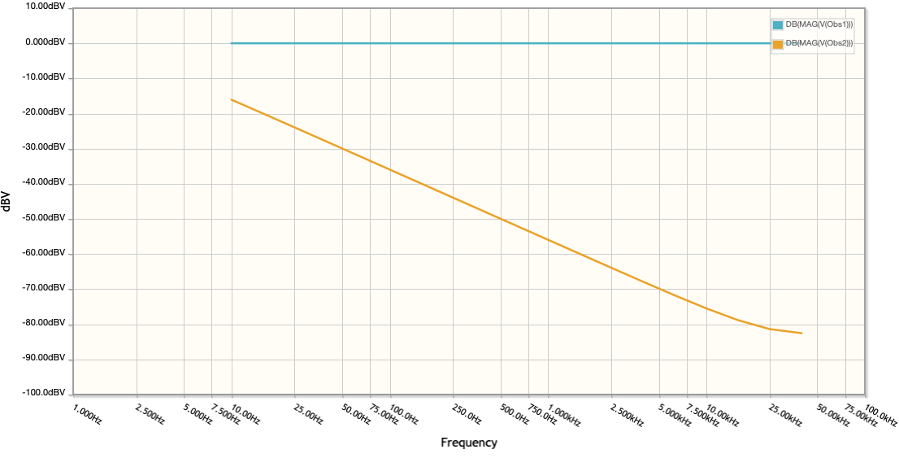
Figure 14: Attenuation of high frequencies by the low pass filter.
In addition to the filtering behavior, we know that the circuit produces a steady DC current from the approximately square wave input. Let’s check this using the simulator again, but this time looking at output voltages. Figure 15 shows the results, which should ideally be close to those in Figure 12.
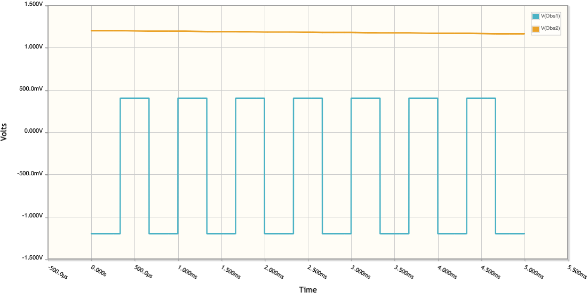
Figure 15: Voltages produce by the active low pass filer. The square wave is the simulated input. The gold/orange line is the output DC voltage, which is higher than observed, probably due to an imperfect simulation configuration. The key point is that a steady DC voltage is produced.
Calibration Curve
A calibration curve was prepared using a 10 mL plastic syringe and some small bottles. Two drops of red food coloring were added to 10 mL of water to create the first solution. Three mL of the stock solution was added to seven mL of water. This 2nd solution was then diluted in similar fashion and so forth, to get five total solutions. Tap water was used. The green LED was disconnected and the dark current was measured. Next, tap water was used as a blank. Then the voltage for each sample was recorded (voltage measurements are taken at point F in Figure 8). Listing 1 shows the computational steps. Figure 16 shows the samples from most concentrated to least concentrated.
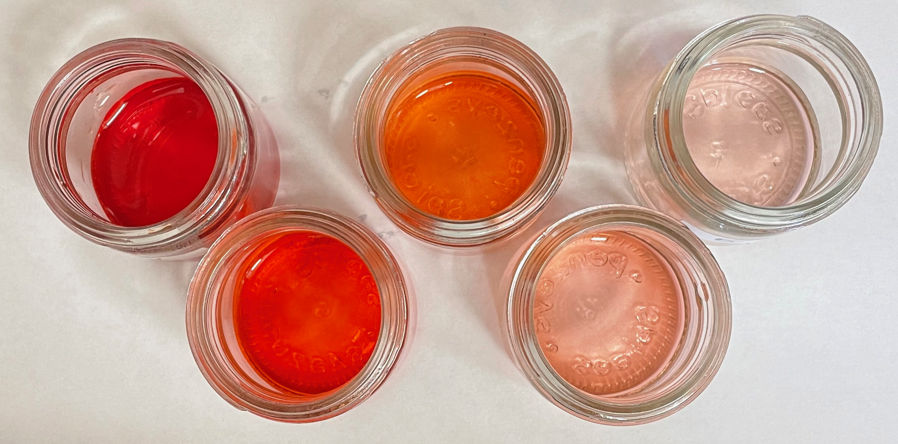
Figure 16: Calibration samples.
Listing 1: Computation of absorbance values.
dark <-6.0e-3# dark voltageblank <-0.281# tap watervoltage <-c(26.2e-3, 26.8e-3, 34.0e-3, 99.9e-3, 196.0e-3) # sample readingsstock <-1.0# 2 drops red food coloring in 10 mL tap waterdil <-3/10# serial dilution factorconc <-c(stock, dil^(1:4))DF <-data.frame(Concentration = conc, Voltage = voltage)DF$Absorbance <--log((DF$Voltage - dark)/(blank - dark))
Table 1 shows the results. A calibration curve is shown in Figure 17. Clearly the most concentrated samples exceed the linear behavior expected for Beer’s Law (as observed by McClain). If the two most concentrated samples are dropped, the result is a nice linear relationship, as seen in Figure 18 and the summary of the fit in Listing 2.
Table 1:
Relative sample concentrations and corresponding voltages and
absorbances.
Concentration
Voltage
Absorbance
1.0000
0.0262
2.611089
0.3000
0.0268
2.581818
0.0900
0.0340
2.284567
0.0270
0.0999
1.074541
0.0081
0.1960
0.369747
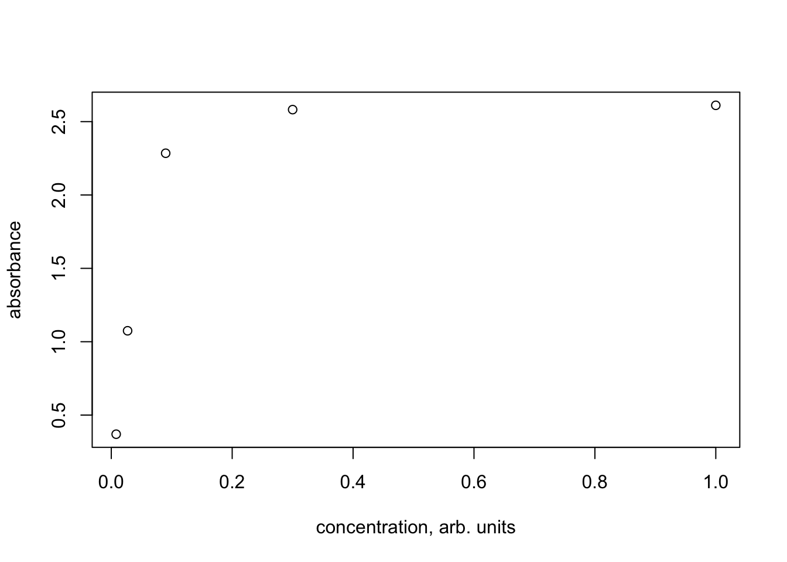
Figure 17: Calibration curve, hardware version 3.
Listing 2: Results of fitting the three lowest concentration samples.
Call:
lm(formula = DF35$Absorbance ~ DF35$Concentration)
Residuals:
1 2 3
-0.03688 0.15983 -0.12294
Coefficients:
Estimate Std. Error t value Pr(>|t|)
(Intercept) 0.3118 0.1840 1.694 0.3394
DF35$Concentration 22.3292 3.3801 6.606 0.0956 .
---
Signif. codes: 0 '***' 0.001 '**' 0.01 '*' 0.05 '.' 0.1 ' ' 1
Residual standard error: 0.205 on 1 degrees of freedom
Multiple R-squared: 0.9776, Adjusted R-squared: 0.9552
F-statistic: 43.64 on 1 and 1 DF, p-value: 0.09564
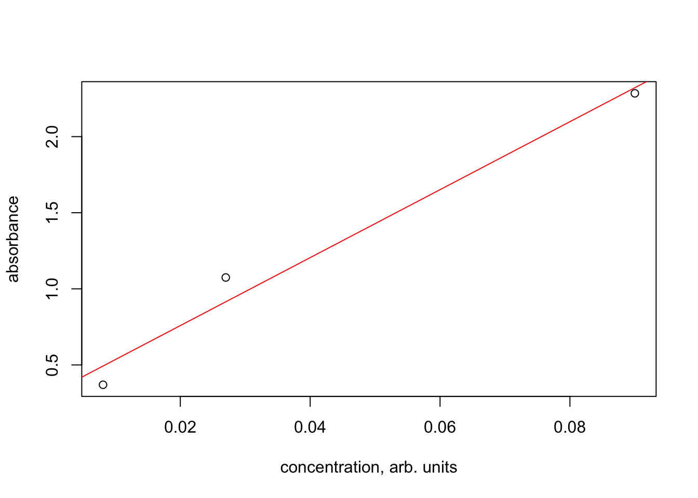
Figure 18: Calibration curve, hardware version 3, dropping the two most concentrated samples.
Not too bad!
References
Kvittingen, Eivind V, Lise Kvittingen, Thor Bernt Melo, Birte Johanne Sjursnes, and Richard Verley. 2017. “Demonstrating Basic Properties of Spectroscopy Using a Self-Constructed Combined Fluorimeter and UV-Photometer.”Journal of Chemical Education 94: 1486–91.
McClain, Robert L. 2014. “Construction of a Photometer as an Instructional Tool for Electronics and Instrumentation.”Journal of Chemical Education 91: 747–50.


{kind=link}